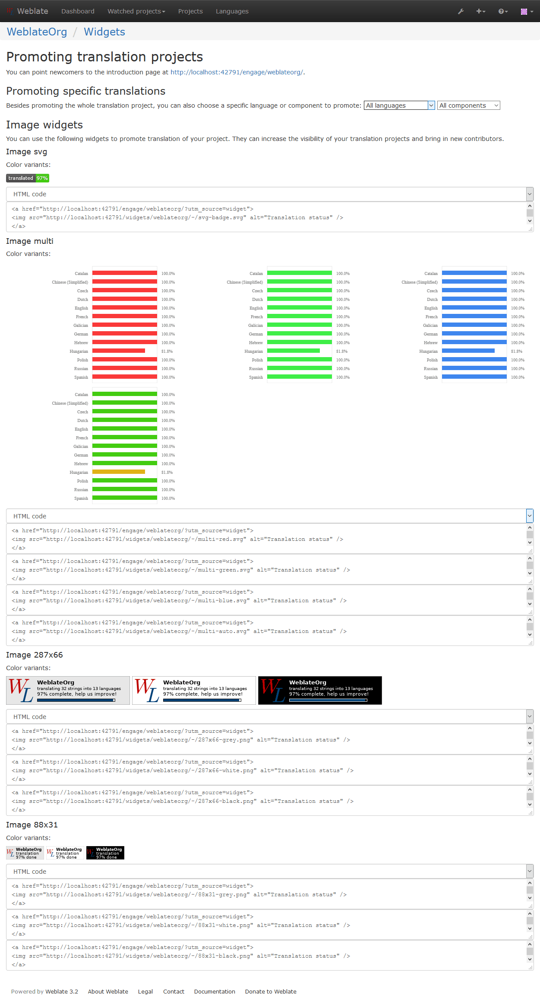
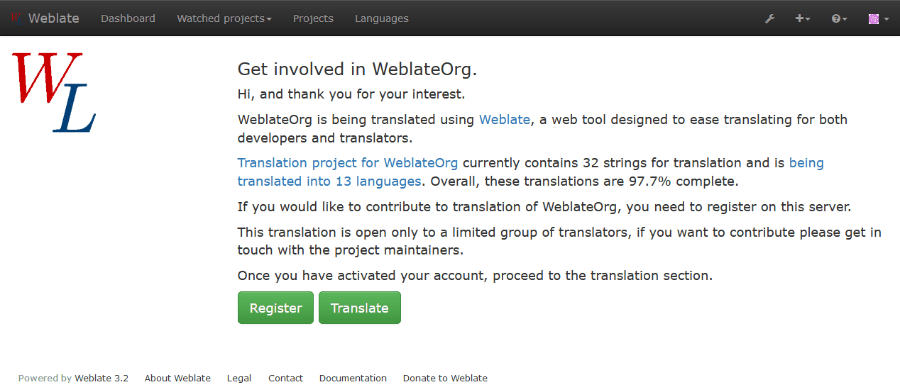

Promoting the translation¶
Weblate provides you widgets to share on your website or other sources to promote the translation project. It also has a nice welcome page for new contributors to give them basic information about the translation. Additionally you can share information about translation using Facebook or Twitter. All these possibilities can be found on the Share tab:
All these badges are provided with the link to simple page which explains users how to translate using Weblate:
